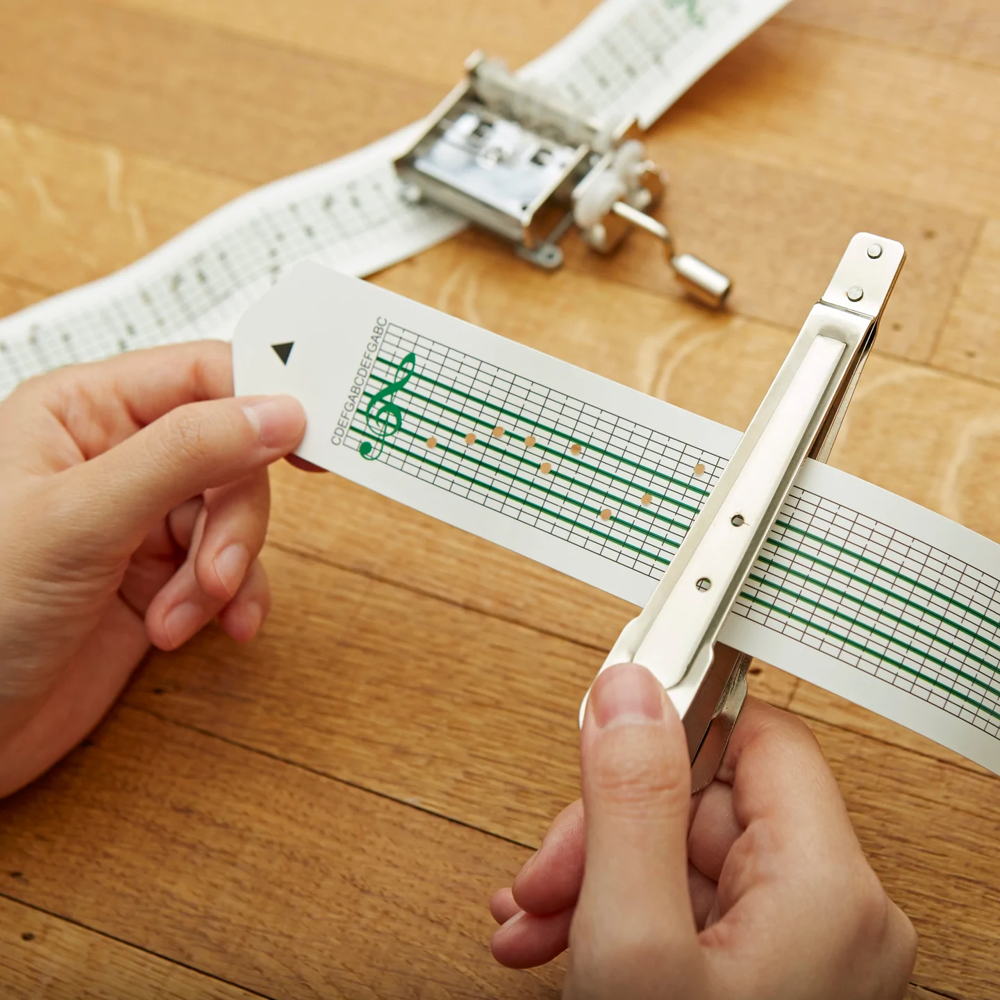

<br>
### Week 11: Computer Programming
This week's project was to build an MVP of the hardest part of our final project. The hardest part of the project, by far, is my automatic hole puncher, so I decided to continue my machine building work from last week.
###The Goal
The goal is to create a machine that will automatically punch the holes needed for the commercially available music box I'm using, which runs off punched cardstock instead of a regular music box mechanism. This enables the user to punch different songs instead of being restricted to one, like usual. Usually, you have to hand-punch every single note, which is both a pain and difficult to do precisely due to human error. I want to create a machine that does this automatically. You can see a promotional photo from the company that makes the music box below, which demonstrates what the machine will hopefully be able to do.

The machine has three separate parts, which I will definitely not be able to finish by the end of this week, but I'm going to get as much done as possible.
First of all, because this is an intimidating project, I began by giving my machine a name. I have christened him Punchy McPunchface, which makes me smile every time I see the folder on my laptop. Once that was settled, I moved onto making some plans. I sat down with PK, who helped me brainstorm lots of helpful ideas. I broke down this machine into three parts:
<ul>
<li>The roller, which will move the paper forward</li>
<li>The puncher, which will actually punch the hole in the paper</li>
<li>The slider, which will move the puncher side to side</li>
</ul>
Then, I drew up this diagram. Unfortunately, my drawing skills are not up to snuff, but I labeled everything to make it as clear as possible. I'm envisioning a box, which will hopefully eventually be made of sheet metal, but will be cardboard as I prototype. The back half of the box will be a cylinder holding extra paper (think like a roll of butcher paper) plus the punching mechanism and slider. The front half of the box will be the roller mechanism to move the paper forward.
On the lower half of the drawing, you can see more details of the puncher. I'd like to cut two metal brackets out of sheet metal, and screw them together, then thread the paper through. This will hopefully provide enough tension so the paper can be punched. Then, I'll use a rack and pinion mechanism and a stepper motor to make the vertical punching motion. I purchased the music box, which comes with the hole punch that has a punch the correct size for the needed holes, so I'll take it apart onces it comes and stick the punch onto the rack. Hopefully, if the stepper motor moves fast enough, it'll punch successfully and cleanly.
###Roller
I had to finish up the roller part from last week because I was sick last week and couldn't make it into the lab much. This began with making a roller that would fit directly onto the motor shaft, but it didn't quite fit, so I printed 3 more test pieces to see which would fit over the shaft best: ones with diameters of 4.9 mm, 5.0 mm, and 5.1 mm. Sadly, none of those fit, so I tried some more testers: 5.2, 5.3, and 5.5 mm. The 5.3 fit perfectly over the motor shaft, so I proceeded with that. I printed the following roller file (download <a download href='./Roller_for_Stepper_Motor.stl'>here</a> and view below).
<iframe src="https://college415.autodesk360.com/shares/public/SH9285eQTcf875d3c53905775811610f3ce8?mode=embed" width="640" height="480" allowfullscreen="true" webkitallowfullscreen="true" mozallowfullscreen="true" frameborder="0"></iframe>
It was then that things began to devolve into failure after disaster after failure. I tried printing the roller three times and each time, the top skinny bit popped off the bottom part. I thought it was because the top part didn't overlap with the bottom cylinder, but I am almost certain it does (I revisited the file, remade the cylinder, and it still kept failing). I decided to change course and just make it one cylinder bcause I don't really have a reason for it to be one skinny and one large one anyway. New file <a download href='./Final_Roller.stl'>here</a>, though I haven't printed it yet and am still using an old roller where the small cylinder is just clinging on.
Then, I laser cut a cardboard box. I designed the file such that I could just cut 4 of the same exact piece and make those the sides, by having the left side have tabs out and the right side have tabs in. I cut those and the bottom piece, and they didn't quite fit together because I forgot to account for the thickness of the cardboard. I tried again by re-cutting the lid, then assembled the box (except the front and top) and reinforced it with hot glue. Download the final .dxf <a download href='./Box.dxf'>here</a> (to make a six-sided box, cut 4 of the side piece and 2 of the top/bottom piece).
I found a 5 mm dowel around the lab and two wheels, so I slid the wheels on to act as the top roller. Luckily, they fit perfectly. I then stuck the roller onto the stepper motor and put it to the side of the box. Then, I used a small knife to cut triangular-shaped slits in the cardboard box such that the dowel could slide into them securely. For the final project, I'll cut actual holes in the stainless steel housing, but this will do for now. I adjusted the cuts until the wheels sat nearly flush with the roller. The stepper motor was actually a bit too big and got in the way a tad, so the wheels don't quite sit as close as they should. I'll address this by making the roller part bigger, so the top of it overtakes the top of the stepper motor. Anyway, this was close enough for now, and I cut a strip of vinyl, which is about the same thickness as cardstock (the cardstock strips are coming in with the music box, which has yet to arrive).
I hooked up the stepper motor using Nathan's [guide](https://nathanmelenbrink.github.io/lab/machine/L9110_step.html) and an L9110, then I just set it up with the example constant speed code that the AccelStepper [library](https://www.airspayce.com/mikem/arduino/AccelStepper/classAccelStepper.html) provides. Eventually, I'll write the code such that it only moves forward once the slider and puncher parts are done, and calibrate it such that it moves the precise amount it needs to to get to the next column of punches. For now, you can see that it does work to pull a piece of vinyl forward:
<video width="750" height="420" controls>
<source src="WorkingRoller.MOV">
Your browser does not support the video tag.
</video>
However, it is rather janky. I need to hold the stepper motor in place because otherwise the vibration can knock the wheels up, preventing there from being enough friction on the paper to pull it forward. I'll need to figure out a way to hold the stepper motor down. I hope a lot of the instability will be eliminated when I make the sheet metal housing.
###Puncher
Once the roller was in a semi-functioning place, I moved onto the hole punching part. I found [this](https://www.thingiverse.com/thing:3725863) rack and pinion mechanism on Thingiverse and downloaded it so I could make edits that would suit my project. I first just tried printing it, which failed for some reason - not sure why. Felicia was kind enough to re-start it and it failed again because the filament got stuck. Then, it failed a third time: one of the pieces started moving around, so maybe that piece isn't sitting flat on the bed? I don't think that's it though, because I used Prusa Slicer to put each of the pieces on the right face... I'll have to fiddle with it again. Regardless, in the midst of all these failures, I was trying to edit the file to scale it down because I do not need a large rack. Scaling it down was fine, but changing all the screw holes was not. I first tried editing the original sketches, but I couldn't quite figure out how the designer had used sketches versus other tools to make the screw holes, so it was hard to find the screw holes. Even when I did find a sketch with screw holes, they were still the original size of 3.2 mm, despite the scaled down version being 1.6 mm. I assume this is a quirk of Fusion, which I tried to get around by rolling the timeline marker to before the screw holes were made, but that also did not work. I then tried using press pull to edit the screw hole sizes, which also failed for assorted reasons.
At this point, I'd spent several hours trying to edit this and decided it made more sense to just make my own design. I will follow [this](https://forums.autodesk.com/t5/fusion-360-design-validate/rack-and-pinion-tutorial/td-p/6373571) tutorial to make the rack and pinion, and will use the other design as inspiration for giving the pieces a stable housing.
Obviously, all of this slowed me down quite a bit. This has also been a very busy week, given med school interviews, a COVID scare, and being a thesising senior taking 5 classes. I honestly didn't have a ton of time this week to come into the lab, and I did as much as I could in the time I had. This is the biggest part of my final project, so I will continue working on it so I can get a viable product by the fair.